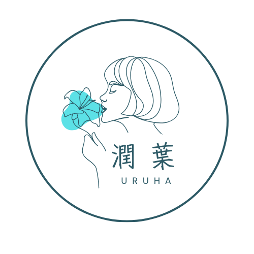

私が四柱推命と深く関わるようになったのは、仕事と家庭、そして子育てのすべてに手いっぱいになり不安に駆られていた時期でした。
当時、しっくりくる言葉に出会えず、「それなら自分で答えを見つけよう」と手に取ったのが自然派四柱推命の本でした。
自分の命式を読み解く中で得た「深い安堵感」と「自己肯定感」。これが私の原点です。
運気を「良い・悪い」と断じるのではなく、どんな時期にも光を見つけ、「明日からまた歩き出してみよう」と思えるきっかけ作りを心を込めてお手伝いいたします。
運気は季節の巡りのようなもの。すべての時期に成長の種が隠されています。その意味を一緒に読み解き、未来への希望に変えていきます。
単なる予測ではなく「今、何をすべきか」「こうすれば運が開ける」という具体的な行動のヒントをお伝えすることを大切にしています。
はじめての方にも安心してご利用いただけるよう、
お申し込みから鑑定書のお届けまでの流れをご案内します。
フォームまたはLINEからご連絡ください。
ご希望のメニューが決まっていない場合も、お気軽にご相談いただけます。
生年月日、生まれた時間、出生地、ご相談内容をお伺いします。
生まれた時間が不明な場合も、お申し込みいただけます。
ご案内後、所定の方法でお支払いをお願いいたします。
ご入金確認後、鑑定書の作成に入ります。
命式を丁寧に読み解き、鑑定書（PDF）をLINEまたはメールにてお届けします。
お届けの目安は、ご入金確認後3〜5日です。
鑑定書お渡し後、LINEでの補足質問を承ります。
ご希望の方には、お電話でのフォローも可能です。
鑑定結果をもとに選定した、今のあなたに最適な精油（エッセンシャルオイル）の組み合わせをお伝えします。
実物のオイル販売ではなく
「ブレンドレシピ（調合の指示書）」
のお渡しとなります、レシピをもとに、アロマショップ等で香りを探す時間もお楽しみください。（プラナロム精油での説明となります）。
【処方箋に含まれるもの】
本メニューでご紹介する精油は、医療現場でも用いられる高品質なエッセンシャルオイルブランド
「プラナロム社（PRANARÔM）」の製品を基準として選定しています。
植物ごとの成分分析（ケモタイプ）に基づき、香りだけでなく安全性や品質にもこだわった精油です。
【お渡し形式】
スマートフォンでいつでも見返せる「デジタルカード（画像）」または「PDF」にてお送りします。
【料金】 鑑定料 ＋ 3,300円
リリース価格 2,200円！
（2月3日まで）
※お選びした精油が体質やお好みに合わなかった場合でも、ご返金はいたしかねます。あらかじめご了承ください。
四柱推命総合鑑定
「本格的な鑑定までは必要ないけれど、最近なんとなく不調を感じる」
「今の自分のエネルギー状態を知って、自分でメンテナンスしたい」
そんな方のための、
「診断」と「アロマ処方」
がセットになった単体プランです。
生年月日からあなたの命式における「五行（木火土金水）」のバランスを算出。
今のあなたに「足りないエネルギー」や「過剰になっているエネルギー」を分析しそれを整えるためのアロマレシピをお伝えします。
お届けする内容
以下の2点をスマートフォンで見られるデジタルカード（またはPDF）にてお届けします。
本メニューでご紹介する精油は、医療現場でも用いられる高品質なエッセンシャルオイルブランド
「プラナロム社（PRANARÔM）」の製品を基準として選定しています。
植物ごとの成分分析（ケモタイプ）に基づき、香りだけでなく安全性や品質にもこだわった精油です。
料金 3,300円（税込）
※お選びした精油が体質やお好みに合わなかった場合でも、ご返金はいたしかねます。あらかじめご了承ください。
⚠️ 必ずお読みください（鑑定との違い）
本メニューは現在のエネルギーバランスを読み解くことに特化したものです。
以下のような詳しい鑑定内容は含まれませんのでご注意ください。
・性格や才能の詳細な分析
・運勢バイオリズム（年運・月運など）
・具体的なお悩み相談（仕事、相性など）
※これらを詳しく知りたい方は「四柱推命総合鑑定（＋アロマオプション）」をお申し込みください。
Aさん（40代 女性）
私らしくこの先を生きていけるような、勇気が湧きました。
鑑定を参考にさせていただきます。また、何かあったら是非お願いしたいです。
Bさん（40代 女性）
その方一人一人に寄り添う姿勢、良くないことも言って終わりではなく、
そんな時はこうすればいいよと教えてくださり、とても前向きな気持ちになりました。
Cさん（30代 女性）
面白いほど当たり過ぎていて、楽しかったです笑
娘の事も含め、これからの道筋が見えたので、鑑定を参考にさせていただきながら、
引き続き頑張っていこうと思いました。